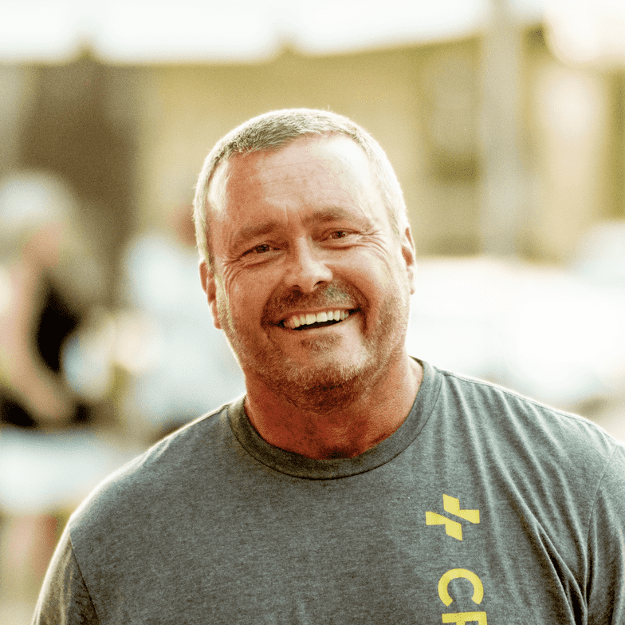
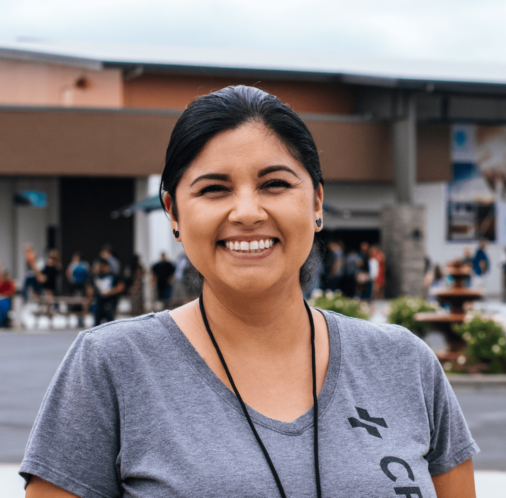

“I grew up never knowing love. My life was full of anger. I had no hope and I lost everything. I came to Centerpoint
and Jesus saved me. My life isn’t restored, it’s more than I could have imagined.”
–– Neil
“Before Centerpoint I was lost. My husband left me, I fell into a deep depression, and I drank a lot. Surrendering my
life to the Lord at Centerpoint and getting baptized changed everything for me. I now have freedom and purpose. My
husband and I got remarried and I am serving the Lord with joy.”
–– Martha
